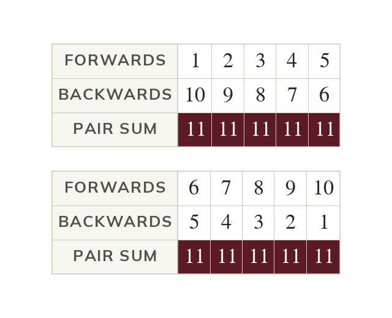
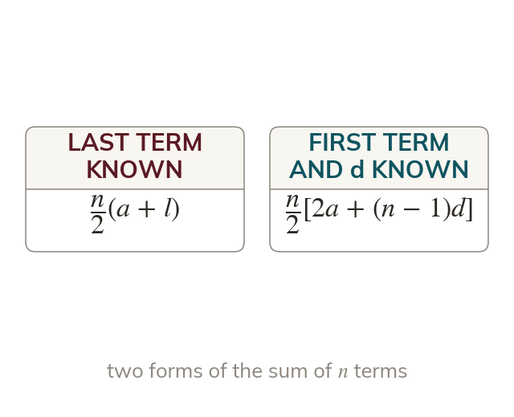
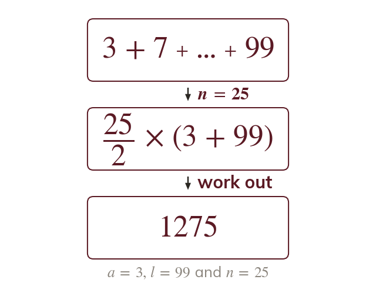
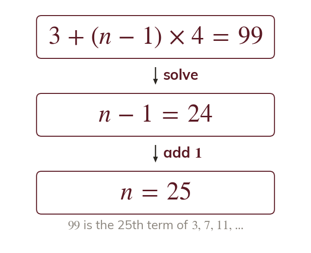

Pair from both ends
Writing a series forwards and backwards pairs terms with equal sums. So twice the sum is
Adding + ... + term by term takes minutes. Pairing the terms from each end takes seconds, because every pair adds to the same total.
Work down the page at your own pace. Write every answer in your book first, then click to check it.
Read each card, then follow the worked examples one step at a time.

Writing a series forwards and backwards pairs terms with equal sums. So twice the sum is

Halving gives the sum: with the last term. Replacing with gives
Pick an answer. If it's wrong, the feedback tells you which mistake it was.
Read each card, then follow the worked examples one step at a time.

When the last term is known, is quicker. Only the number of terms is still needed.

The last term's position comes from the nth term. Solving finds
Pick an answer. If it's wrong, the feedback tells you which mistake it was.
Finished? Next lesson: 10H.1.5 Arithmetic Series Problems.
Log in, then search for a code to practise that skill.
Videos, worksheets and more on each part of this lesson.